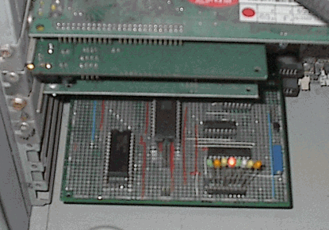
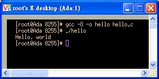
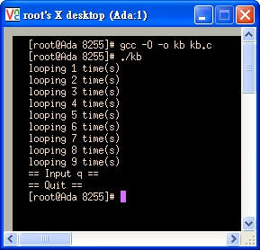
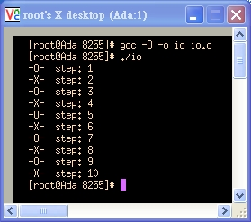
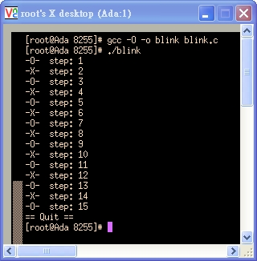
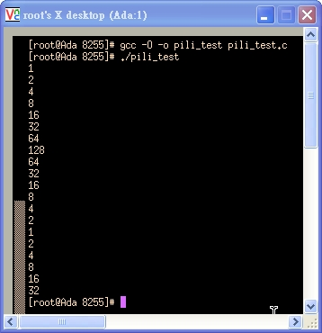
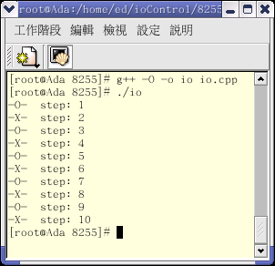
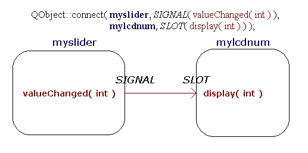
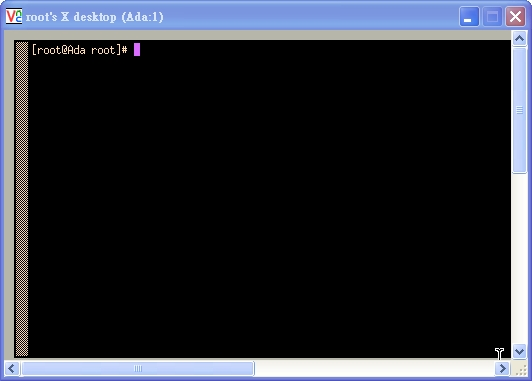

Man-Machine Interfaces
Industry Standard Architecture (ISA)
$author: Ching-Wen (Ed) Lai
$date: May. 2003
$revised: Mar. 2018
$keywords: man, machine, interface, industry standard architecture, isa
An exercise of Intel 8255 PIO (Programmable Peripheral Interface, PPI) control via ISA interface. Blinking LED on Red Hat Linux.
- Doing
circuit design work by using OrCAD
Soldering circuit board by using Hand Tools- Verifying circuit board by using
debug command on DOS
- Blinking LED by using Linux
C and C++ on Linux
Content
Concept
基本 I/O 控制實驗，設計一塊 ISA 電路板，利用 Intel 8255 擴充電腦 IO port, 並控制 LED 閃爍.
Requirements
Hareware
Schematic
| 8255A (Selects) |
A1 |
A0 |
I/O Address |
| Port A |
0 |
0 |
300H |
| Port B |
0 |
1 |
301H |
| Port C |
1 |
0 |
302H |
| Control Word Register |
1 |
1 |
303H |
- I/O Address mapping for Intel 8254:
| 8254 (Selects) |
A1 |
A0 |
I/O Address |
| Counter 0 |
0 |
0 |
320H |
| Counter 1 |
0 |
1 |
321H |
| Counter 2 |
1 |
0 |
322H |
| Control Word Register |
1 |
1 |
323H |
| TTL |
8255 |
8254 |
74LS138 (3-8 Decode) |
74LS00 (NAND) |
74LS244 (Locker) |
| +5V |
26 |
24 |
16 |
14 |
20 |
| GND |
7 |
12 |
8 |
7 |
10 |
Soldering
| Front View |
Inserting Board into ISA slot on PC |
 |
 |
- 準備一般的焊接工具即可, 另有 可有可無的 防靜電用躡子、一號起子、十號起子…不再贅述.
| No |
手工具名稱 |
數量 |
單位 |
品牌/規格 |
備註 |
| 1 |
電烙鐵 |
1 |
支 |
|
|
| 2 |
尖嘴鉗 |
1 |
支 |
/PN-2005 |
|
| 3 |
斜口鉗 |
1 |
支 |
/TR-25-P |
|
| 4 |
吸錫器 |
1 |
支 |
|
|
| 5 |
銲錫 |
1 |
捲 |
|
Consumables |
| 6 |
鍍銀線 |
1 |
捲 |
OK / R26-500 |
Consumables; Optional |
| 7 |
錫油(錫膏 ) |
1 |
罐 |
goot / BS-10 |
Consumables; Optional |
| 8 |
三用電錶 |
1 |
台 |
|
用於測焊接完後的電路版是否有短路 |
Components
| No |
零件名稱 |
數量 |
備註 |
| 1 |
82C55 |
1 |
可程式規劃邏輯介面 ; PPI |
| 2 |
8254 ( 或 D71054C ) |
1 |
可程式規劃計數(時)介面 / 最高輸入時序 8 MHz |
| 3 |
74LS138 |
1 |
解碼致能 8255 與 8254 用 |
| 4 |
74LS00 |
1 |
解碼致能 74LS138 與 喇叭電路 |
| 5 |
5K 可調式電阻 |
1 |
喇叭電路用 |
| 6 |
C1815 |
1 |
喇叭電路用 , 編號面 接腳 ECB |
| 7 |
喇叭 |
1 |
喇叭電路用, 使用 PC 上的喇叭即可 |
| 8 |
LED |
8 |
檢視8255 portA 輸出用 |
| 9 |
PC ISA 空版 |
1 |
金手指 AT 介面電路板 |
| 10 |
IC 腳座 |
N/A |
上述 IC 所需腳座 |
PS. 排針座可視需要準備.
- Orcad Family Release 9.2 Lite Edition
| NO |
Orcad 零件庫 |
零件名稱 |
| 1 |
MISC |
82C55A, 8254 |
| 2 |
MUX DECODER GATE |
74LS138 |
| 3 |
BUSDRIVER TRANSCEIVER |
74LS00 |
| 4 |
DISCRETE |
|
| 5 |
CONNECTOR |
|
| NO |
項目 |
說明 |
| 1 |
旁路電容 |
每顆 IC 旁靠近電源處可加上 |
| 2 |
LED 的限流電阻 |
|
| 3 |
DIP SWITCH 的光藕合電晶體 |
|
Safety First
- Short Circuit: 當電路焊接完畢後, 需使用三用電表，確定電路板的正負電源沒有短路.
Software
- MicroSoft DOS (Disk Operating System) 6.0
debug - Red Hat Linux 8.0
- GCC (C compiler)
- G++ (C++ compiler)
- Windows 98
- Turbo C
Demonstration
DOS
- DOS系統在硬碟上的開機速度快, 且內部的 Debug 指令，在電路板剛焊好, 要驗證其功能時，非常方便.
- 使用我的桌上型電腦。在 CONNER CP30254H( 252M ) 硬碟上安裝以下的系統.
| NO |
軟體名稱 |
說明 |
必要性 |
| 1 |
DOS 6.00 |
用於電腦開機，與 debug 指令 |
Mandatory |
| 2 |
PCTOOLS9 |
類似 NU8 的系統管理與修護工具 |
Optional |
| 3 |
Turbo C++ 3.0 |
C 程式 編譯器 |
Optional |
| 4 |
Macro Assembler 6.11 |
組合語言編譯器 |
Optional |
Debug
- 由於我們只是要用來測試 8255 I/O 實驗版，故只需要 DOS 6.00 就可以了，其它視需要再安裝.
- 將 8255 I/O 實驗版 插入 ISA 槽，電腦開機後，鍵入以下指令.
| Step |
指令 |
說明 |
| 0 |
C:/>cd dos60 |
切到 debug 所在的那個資料夾 (Optional) |
| 1 |
C:/>debug |
進入 debug模式，此時會出現命令提示字元 - |
| 2 |
- o 303 80 |
設定 8255 的 Port A 、Port B、Port C 皆為模式 0 輸出 |
| 3 |
- o 300 ff |
令 8255 的 Port A 輸出 11111111 ( LED 全部 點亮 ) |
| 4 |
- o 300 00 |
令 8255 的 Port A 輸出 00000000 ( LED 全 暗 ) |
| 5 |
- o 300 55 |
令 8255 的 Port A 輸出 10101010 ( LED 0、2、4、6 點亮 ) |
| 6 |
- o 300 aa |
令 8255 的 Port A 輸出 01010101 ( LED 1、3、4、5 點亮 ) |
| 7 |
- q |
最後下 q 命令 離開 debug 模式 |
- 當然可多加幾項測試 8255 I/O 實驗版，若測試項目眾多，可以考慮寫 應用程式語言 ( Turbo C++、Macro Assembler ) 加以測試。
Red Hat Linux
- 在 Red Hat Linux 8.0 平台上 ，使用 root 權限 ，以 C 與 C++ 來驅動 8255 I/O 實驗板。
- 硬碟使用 Quantum Fireball Ex( 6449M ) 並安裝以下的系統.
| NO |
軟體名稱 |
說明 |
備註 |
| 1 |
RedHat Linux 8.0 |
含 X window( X 11 ；視窗環境 ) |
Linux 作業平台 |
| 2 |
gcc 3.2 (20020903) |
C 語言(GNU C) 組譯器 |
下 gcc -v 指令 可查看 gcc 版本 |
| 3 |
g++ |
C++ 語言組譯器 |
組譯器 |
| 4 |
QT |
KDE UI 工具組 |
需使用 g++ 編譯器. QT 參考手冊 簡體 |
| 5 |
Kate |
編輯 C/C++ 語言用 |
編輯器 |
- 使用 C 語言 與 C++ 語言來控制 I/O 所需 include 的標頭檔.
| NO |
使用語言 |
所需 INCLUDE 的檔案與語法 |
| 1 |
C 語言 |
#include |
| 2 |
C++語言 |
#include |
C
- There are some programs which can help us to verify the hardware and software.
| NO |
程式名稱 |
說明 |
| 1 |
hello.c |
Linux C 的基本測試，印出 Hello, world |
| 2 |
kb.c |
類似 DOS 上 的 kbhit 函式(偵測鍵盤是否被按下)功能 |
| 3 |
io.c |
以 Linux C 控制 閃爍 8255 I/O 實驗板上的 LED |
| 4 |
blink.c |
結合kb.c與io.c.讓實驗板上的LED不停閃爍，直到按下q鍵才離開 |
| 5 |
pili_testing.c |
跑馬燈模擬程式。由1計數至128,128計數至1,來回列印20 次 |
| 6 |
pili.c |
LED 跑馬燈。讓實驗板上的 LED來回閃爍，直到按下q才離開 |
- 由最後的跑馬燈程式，最後確定 可控制 8255 I/O 實驗板.
Programming
/****************************************************************************
Filename: hello.c
Compiler: gcc -O -o hello hello.c
Author : Jing-Wen.Lai
Function: Linux C 的基本測試，印出 Hello, world。
Date: 3/22 2003
****************************************************************************/
#include <stdio.h>
int main(int argc, char *argv[])
{
printf("Hello, world\n");
return 0;
}

/****************************************************************************
Filename: kb.c
Compiler: gcc -O -o kb kb.c
Author: Jing-Wen.Lai
Function: 平常執行 Loop 印出 計數 訊息 ，除非鍵盤按下 'q' 鍵 則離開計數 Loop 。
Date: 03/22 2003
Reference: 參考以下網路文件改寫
http://www.control.auc.dk/~jnn/c2000/programs/mm5/keyboardhit/msg02541.html
****************************************************************************/
#include <stdio.h>
#include <termios.h>
static struct termios orig, new;
static int peek = -1;
int main()
{
int ch =0; /* 鍵盤所按下的字元 */
int loopCount=1; /* Loop 用 計數器 */
tcgetattr(0, &orig);
new = orig; new.c_lflag &= ~ICANON; new.c_lflag &= ~ECHO; new.c_lflag &= ~ISIG;
new.c_cc[VMIN] = 1; new.c_cc[VTIME] = 0; tcsetattr(0, TCSANOW, &new);
/* =========================== */
/* [[ 當輸入字元不為 q 時 ]] */
/* =========================== */
while(ch != 'q') {
printf("looping %d time(s) \n",loopCount);
sleep(1); loopCount++;
if(kbhit()) {
ch = readch();
printf("== Input %c ==\n",ch);
}
}
/* ======================== */
/* [[ 輸入字元 為 q 時 ]] */
/* ======================== */
printf("== Quit == \n");
tcsetattr(0,TCSANOW, &orig);
exit(0);
}
/* ======================= */
/* SUB Function */
/* ======================= */
int kbhit()
{
char ch;int nread;
if(peek != -1) return 1;
new.c_cc[VMIN]=0;
tcsetattr(0, TCSANOW, &new);
nread = read(0,&ch,1);
new.c_cc[VMIN]=1;
tcsetattr(0, TCSANOW, &new);
if(nread == 1) {
peek = ch;
return 1;
}
return 0;
}
int readch()
{
char ch;
if(peek != -1) {
ch = peek;
peek = -1;
return ch;
}
read(0,&ch,1);
return ch;
}

/****************************************************************************
-- io.c <Linux I/O 埠 基本測試 -- 測試 剛組裝完成的 IO 板用> --
Author: Jing-Wen.Lai
Function: 以 Linux C 控制 8255 I/O 實驗板上的 LED,
Compiler: 使用 `gcc -O2 -o io io.c',
Running: 以 root 的身份執行 `./io'.
Reference: 由<<CLDP -- Linux 中文文件計劃>>改寫
http://www.linux.org.tw/CLDP/mini/IO-Port-Programming-9.html
****************************************************************************/
#include <stdio.h>
#include <unistd.h>
#include <asm/io.h>
#define CCW 0x303 /* 8255 CCW */
#define PA 0x300 /* 8255 PORT A */
int main()
{
int i=0;
/* 取得埠位址的存取權限 */
if (ioperm(CCW, 3, 1)) {perror("ioperm"); exit(1);}
if (ioperm(PA, 3, 1)) {perror("ioperm"); exit(1);}
/* 定義 8255 工作模式 */
outb(0x80, CCW);
/* 重置 8255 PORT A 的輸出資料信號 (D0-7) 全為零 (0) */
outb(0, PA);
/* LED 交互 閃爍 10 次 ，每次 1000 ms */
for (i=1; i<=10; i++){
usleep(1000000);
if(i%2 == 0){
outb( 0x00, PA);
printf("-X- step: %d\n",i);
}else{
outb( 0xFF, PA);
printf("-O- step: %d\n",i);
}
}
/* 我們不再需要這些埠位址 */
if (ioperm(CCW, 3, 0)) {perror("ioperm"); exit(1);}
if (ioperm(PA, 3, 0)) {perror("ioperm"); exit(1);}
exit(0);
/* 結束 io.c */
}

/******************************************************************************
Filename: blink.c
Compiler: gcc -O -o blink blink.c
Author: Jing-Wen.Lai
Function: 平常執行 Loop 印出 計數 訊息 ， 8255 I/O 實驗板上的 LED 亦隨之閃爍
除非鍵盤按下 'q' 鍵 則離開計數 Loop 。
Date: May. 22/2003
******************************************************************************/
#include <stdio.h>
#include <termios.h>
#include <unistd.h>
#include <asm/io.h>
#define CCW 0x303 /* 8255 CCW */
#define PA 0x300 /* 8255 PORT A */
static struct termios orig, new;
static int peek = -1;
int main()
{
int ch =0; /* 鍵盤所按下的字元 */
int loopCount=0; /* Loop 用 計數器 */
tcgetattr(0, &orig);
new = orig; new.c_lflag &= ~ICANON; new.c_lflag &= ~ECHO; new.c_lflag &= ~ISIG;
new.c_cc[VMIN] = 1; new.c_cc[VTIME] = 0; tcsetattr(0, TCSANOW, &new);
/* 取得埠位址的存取權限 */
if (ioperm(CCW, 3, 1)) {perror("ioperm"); exit(1);}
if (ioperm(PA, 3, 1)) {perror("ioperm"); exit(1);}
/* 定義 8255 工作模式 */
outb(0x80, CCW);
/* 重置 8255 PORT A 的輸出資料信號 (D0-7) 全為零 (0) */
outb(0, PA);
/* =========================== */
/* [[ 當輸入字元不為 q 時 ]] */
/* =========================== */
/* LED 交互 閃爍 */
while(ch != 'q') {
//printf("looping %d times \n",loopCount);
sleep(1); loopCount++;
if(loopCount %2 == 0){
outb( 0x00, PA);
printf("-X- step: %d\n",loopCount);
}else{
outb( 0xFF, PA);
printf("-O- step: %d\n",loopCount);
}
if(kbhit()) {
ch = readch();
}
}
/* ======================== */
/* [[ 輸入字元 為 q 時 ]] */
/* ======================== */
// LED 不亮
outb( 0x00, PA);
/* 我們不再需要這些埠位址 */
if (ioperm(CCW, 3, 0)) {perror("ioperm"); exit(1);}
if (ioperm(PA, 3, 0)) {perror("ioperm"); exit(1);}
printf("== Quit == \n");
tcsetattr(0,TCSANOW, &orig);
exit(0);
}
/* ======================= */
/* sub Function */
/* ======================= */
int kbhit()
{
char ch;int nread;
if(peek != -1) return 1;
new.c_cc[VMIN]=0;
tcsetattr(0, TCSANOW, &new);
nread = read(0,&ch,1);
new.c_cc[VMIN]=1;
tcsetattr(0, TCSANOW, &new);
if(nread == 1) {
peek = ch;
return 1;
}
return 0;
}
int readch()
{
char ch;
if(peek != -1) {
ch = peek;
peek = -1;
return ch;
}
read(0,&ch,1);
return ch;
}

/****************************************************************************
Filename: pili_test.c
Compiler: gcc -O -o pili_test pili_test.c
Author : Jing-Wen.Lai
Function : 由 1 計數至 128 ， 128 計數至 1，來回列印
Date : 3/23 2003
****************************************************************************/
#include <stdio.h>
int main(){
int LED_Data=0x01; /* 初始化資料 */
int directionFlag=1; /* 1: LED 向左點亮 ; 0:LED 向右點亮 */
int i;
for(i=0;i<20;i++){
printf("%d\n", LED_Data);
if (directionFlag == 1)
{
LED_Data *= 2;
if (LED_Data == 128){
directionFlag = 0;
}
}else{
LED_Data /= 2;
if (LED_Data == 1){
directionFlag = 1;
}
}
}
}

/****************************************************************************
Filename: blink.c
Compiler: gcc -O -o blink blink.c
Author: Jing-Wen.Lai
Function: 目的 :: LED 走馬燈。除非鍵盤按下 'q' 鍵 則離開計數 Loop 。
Date: 3/22 2003
****************************************************************************/
#include <stdio.h>
#include <termios.h>
#include <unistd.h>
#include <asm/io.h>
#define CCW 0x303 /* 8255 CCW */
#define PA 0x300 /* 8255 PORT A */
static struct termios orig, new;
static int peek = -1;
int main()
{
int ch =0; /* 鍵盤所按下的字元 */
int loopCount=0; /* Loop 用 計數器 */
int LED_Data=0x01; /* 初始化資料 */
int directionFlag=1; /* 1: LED 向左點亮 ; 0:LED 向右點亮 */
tcgetattr(0, &orig);
new = orig; new.c_lflag &= ~ICANON; new.c_lflag &= ~ECHO; new.c_lflag &= ~ISIG;
new.c_cc[VMIN] = 1; new.c_cc[VTIME] = 0; tcsetattr(0, TCSANOW, &new);
/* 取得埠位址的存取權限 */
if (ioperm(CCW, 3, 1)) {perror("ioperm"); exit(1);}
if (ioperm(PA, 3, 1)) {perror("ioperm"); exit(1);}
/* 定義 8255 工作模式 */
outb(0x80, CCW);
/* 重置 8255 PORT A 的輸出資料信號 (D0-7) 全為零 (0) */
outb(0, PA);
/* =========================== */
/* [[ 當輸入字元不為 q 時 ]] */
/* =========================== */
/* LED 交互 閃爍 */
while(ch != 'q') {
sleep(1);
outb( LED_Data, PA);
printf("Pili Lamp is Running and The 8255-Port-A's outData is %d\n",LED_Data);
if (directionFlag == 1){
LED_Data *= 2;
if (LED_Data == 128){
directionFlag = 0;
}
}else{
LED_Data /= 2;
if (LED_Data == 1){
directionFlag = 1;
}
}
if(kbhit()) {
ch = readch();
}
}
/* ======================== */
/* [[ 輸入字元 為 q 時 ]] */
/* ======================== */
// LED 不亮
outb( 0x00, PA);
/* 我們不再需要這些埠位址 */
if (ioperm(CCW, 3, 0)) {perror("ioperm"); exit(1);}
if (ioperm(PA, 3, 0)) {perror("ioperm"); exit(1);}
printf("== Quit == \n");
tcsetattr(0,TCSANOW, &orig);
exit(0);
}
/* ======================= */
/* sub Function */
/* ======================= */
int kbhit()
{
char ch;int nread;
if(peek != -1) return 1;
new.c_cc[VMIN]=0;
tcsetattr(0, TCSANOW, &new);
nread = read(0,&ch,1);
new.c_cc[VMIN]=1;
tcsetattr(0, TCSANOW, &new);
if(nread == 1) {
peek = ch;
return 1;
}
return 0;
}
int readch()
{
char ch;
if(peek != -1) {
ch = peek;
peek = -1;
return ch;
}
read(0,&ch,1);
return ch;
}

C++
- There are some programs which can help us to verify the hardware and software.
| ID |
程式名稱 |
說明 |
| 1 |
hello.cpp |
Linux C++ 的基本測試，印出 Hello C++ ! |
| 2 |
io.cpp |
Linux I/O 埠 基本測試 -- 測試 剛組裝完成的 IO 板用 |
| 3 |
class_io.cpp |
LED 跑馬燈。全暗, 全亮, 左移, 右移 測試 |
/******************************************************************************
Filename: hello.cpp
Compiler: g++ -Wno-deprecated -ohello hello.cpp
Function: C++ 的基本測試，印出 Hello C++!。
Date: 3/23 2003
Reference:
******************************************************************************/
#include <iostream.h>
int main() {
cout << "Hello C++ !" << endl;
return (0);
}

/******************************************************************************
Filename: io.cpp
Function: Linux I/O 埠 基本測試 -- 測試 剛組裝完成的 IO 板用
Compiler: 使用 `g++ -O -o io io.cpp',
Running: 以 root 的身份執行 `./io'.
Reference: 由<<CLDP -- Linux 中文文件計劃>>改寫
http://www.linux.org.tw/CLDP/mini/IO-Port-Programming-9.html
******************************************************************************/
#include <stdio.h>
#include <unistd.h>
#include <sys/io.h>
#define CCW 0x303 /* 8255 CCW */
#define PA 0x300 /* 8255 PORT A */
int main()
{
/* 取得埠位址的存取權限 */
if (ioperm(CCW, 3, 1)) {perror("ioperm"); return (0);}
if (ioperm(PA, 3, 1)) {perror("ioperm"); return (0);}
/* 定義 8255 工作模式 */
outb(0x80, CCW);
/* 重置 8255 PORT A 的輸出資料信號 (D0-7) 全為零 (0) */
outb(0, PA);
/* PILI 燈 (1000 ms) 交互 閃爍 */
for (int i=1; i<=10; i++){
usleep(1000000);
if(i%2 == 0){
outb( 0x00, PA);
printf("-X- step: %d\n",i);
}else{
outb( 0xFF, PA);
printf("-O- step: %d\n",i);
}
}
/* 我們不再需要這些埠位址 */
if (ioperm(CCW, 3, 0)) {perror("ioperm"); return (0);}
if (ioperm(PA, 3, 0)) {perror("ioperm"); return (0);}
return (0);
}

/******************************************************************************
Filename: class_io.cpp
Compiler: g++ -Wno-deprecated -oclass_io class_io.cpp
Author: Jing-Wen.Lai
Function: 控制 8255 I/O 卡上的 LED , 使之能夠 向系統申請 8255卡所需的位置,
將 8255卡所需的位置還給系統,與
(1) LED 全部點亮,
(2) LED 全部熄滅,
(3) LED 由左往右跑,
(4) LED 由右往左跑.
******************************************************************************/
#include <iostream.h>
#include <stdio.h>
#include <termios.h>
#include <unistd.h>
#include <sys/io.h>
#define CCW 0x303 /* 8255 CCW */
#define PA 0x300 /* 8255 PORT A */
class ClassForPio8255Card // 類別Person宣告
{
private:
int pio8255CardPort_A_Data;
public:
int initAndApplySystemAddrFor8255Card(); // 向系統申請 8255卡所需的位置
int releaseSystemAddrFor8255Card(); // 將 8255卡所佔用的位置還給系統
void piliLampFromMSBtoLSB(); // 8255卡上的LED 會由高位元點亮到低位元
void piliLampFromLSBtoMSB(); // 8255卡上的LED 會由低位元點亮到高位元
void brightAllLedOn8255Card(); // 點亮 8255卡上的 LED
void darkAllLedOn8255Card(); // 熄掉 8255卡上的 LED
};
int main()
{
int ch = 0; /* 鍵盤所按下的字元 */
ClassForPio8255Card pio8255Card;
pio8255Card.initAndApplySystemAddrFor8255Card(); // 初始化 8255 卡
while(ch!=5){
cout <<"1:Brighting all LED 2:Darking all LED 3:PILI LED(MSB->LSB) 4:PILI LED(LSB->MSB)\n";
cin>>ch;
cout<<"Selected Function is :"<<ch<<"\n";
switch(ch){
case 1:
pio8255Card.brightAllLedOn8255Card();
break;
case 2:
pio8255Card.darkAllLedOn8255Card();
break;
case 3:
pio8255Card.piliLampFromMSBtoLSB();
break;
case 4:
pio8255Card.piliLampFromLSBtoMSB();
break;
default:
cout << "undefine Function ,try again please!\n" ;
break;
}
}
pio8255Card.releaseSystemAddrFor8255Card();
return (0);
}
int ClassForPio8255Card::initAndApplySystemAddrFor8255Card(){
//cout << "initAndApplySystemAddrFor8255Card\n";
/* 取得埠位址的存取權限 */
if (ioperm(CCW, 3, 1)) {perror("ioperm"); return (0);}
if (ioperm(PA, 3, 1)) {perror("ioperm"); return (0);}
/* 定義 8255 工作模式 */
outb(0x80, CCW);
/* 重置 8255 PORT A 的輸出資料信號 (D0-7) 全為零 (0) */
outb(0, PA);
}
void ClassForPio8255Card::brightAllLedOn8255Card(){
//cout << "brightAllLedOn8255Card\n";
outb( 0xff, PA);
}
void ClassForPio8255Card::darkAllLedOn8255Card(){
//cout << "darkAllLedOn8255Card\n";
outb( 0x00, PA);
}
void ClassForPio8255Card::piliLampFromLSBtoMSB(){
pio8255CardPort_A_Data=0x01;
for(int i=0; i<8; i++){
outb( pio8255CardPort_A_Data, PA);
usleep(1000000);
pio8255CardPort_A_Data*=2;
}
}
void ClassForPio8255Card::piliLampFromMSBtoLSB(){
pio8255CardPort_A_Data=0x80;
for(int i=0; i<8; i++){
outb( pio8255CardPort_A_Data, PA);
usleep(1000000);
pio8255CardPort_A_Data/=2;
}
}
int ClassForPio8255Card::releaseSystemAddrFor8255Card(){
//cout << "releaseSystemAddrFor8255Card\n";
// LED 暗
outb( 0x00, PA);
/* 我們不再需要這些埠位址 */
if (ioperm(CCW, 3, 0)) {perror("ioperm"); return (0);}
if (ioperm(PA, 3, 0)) {perror("ioperm"); return (0);}
}

Windows
Turbo C
//**********************************************************************************
//-- PC上介面實習 8255 與 8254 測試
//-- 版本: v0.1 6/6/2001
//-- 說明: 測試 組裝 完畢 的 8255 與 8254 是否可動作
//-- 使用方式: 隨意按任一按鍵, 螢幕上 顯示 "O", 此時 LED 1,2,5,6 亮, 並且喇叭發出聲音
//-- 再隨意按任一按鍵, 螢幕上 顯示 "X", 此時 LED 全部 不亮, 並且喇叭不發出聲音
//-- 按 "Esc" 鍵 可 離開本程式
//--================================================================================
//-- IO 位址 : 請 參考 下面 #define 的定義
//-- 配合硬體 : 參考 下面 參考文件
//-- 元件列表 : 8255 X 1 ( 可程式規劃邏輯介面 ; PPI)
//-- 8254 X 1 ( 可程式規劃計數(時)介面 / 最高輸入時序 8 MHz )
//-- ( 日本 NEC 編號的 8254 為 D71054C )
//--
//-- 74LS138 X 1 ( 解碼致能 8255 與 8254 用 )
//-- 74LS00 X 1 ( 解碼致能 74LS138 與 喇叭電路 )
//--
//-- 5K 可調式電阻 X 1 ( 喇叭電路用 )
//-- C1815 X 1 ( 喇叭電路用 , 編號面 接腳 ECB)
//-- 喇叭 X 1 ( 喇叭電路用, 使用 PC 上的喇叭即可)
//-- LED X 8 ( 檢視8255 portA 輸出用(十顆包裝型 LED 有時無法動作))
//--
//-- 金手指 AT 介面電路板
//-- 上述 IC 所需腳座 及 一般焊接工具
//--================================================================================
//-- 編輯器 : Jext ( http://www.jext.org/ )
//-- 組譯器 : Turbo C++
//-- 參考文件 : PC XT/AT 介面設計與應用 Visual Basic 6.0 版(ISBN:957-499-229-2) / 儒林
//-- 8254 電路圖 P 5-57
//-- 8255 電路圖 P 3-49 (位址選取方式 改用 8255 選取方式)
//-- 原書錯誤更正 :
// p5-62 DEBUG 內的 倒數第八個指令為 -O 303 00
//-- 應改為 -O 302 00
//-- 倒數第七個指令為 -O 303 02
//-- 應改為 -O 302 02
//-- 倒數第三個指令為 -O 303 01
//-- 應改為 -O 302 01
//-- 倒數第二個指令為 -O 323 03
//-- 應改為 -O 302 03
//-- 倒數第一個指令為 -O 303 02 註解處為 禁能 蜂鳴器
//-- 應改為 -O 302 02 應改為 禁能 第二計數器
//-- p5-65 程式碼內作者把 PPI_PC 和 PPI_CW 的位址 有時弄混ㄋ
//-- ( 錯誤蠻多的 改的有點 眼花ㄋ ,不過依作者的錯誤程式碼卻可以執行,真令人訝異)
//-- 備註: 無法在 我的 P-II 上測試(或許需調整 安邁 ROM 內 CLK 的設定,但與可以測試的 P-I 主機 ROM 設定內無法發現相同的 Function)
//-- ,改成於 檢來的 P-I 上測試 ,由於 P-I 的配備較陽春 故將程式碼 改成用 Turbo C++ 寫
//-- 注意: 在 #define 後的 註解 需以 " // " 開頭 不能使用 " ; "
//-- 更新Log:
//
//**********************************************************************************
#include <iostream.h>
//#include <bios.h>
//#include <dos.h>
#include <conio.h>
//>>>>>>>>>>>>>>>>>>>>>>>>> 8255 用 <<<<<<<<<<<<<<<<<<<<<<<<<<<<<<<<<<<<<
#define PPI_8255_CW 0x3f3 // 8255 內的 控制字組 位址
#define PPI_8255_CW_STATE 0x80 // 設定 8255 為 MODE0 全部 PORT 皆為輸出
//>>>>>>>>>>>>>>>>>>>>>>>>> 8255 portA LED 顯示 用 <<<<<<<<<<<<<<<<<<<<<<<
#define PPI_8255_PA 0X3f0 // 8255 內的 PORT A 位址
#define ledEnable 0x00 // 8255 port A 輸出至 LED 1,2,5,6 亮
#define ledDisable 0xff // 8255 port A 輸出至 LED 全部 不亮
//>>>>>>>>>>>>>>>>>>>>>>>>> 8254 用 <<<<<<<<<<<<<<<<<<<<<<<<<<<<<<<<<<<<<
#define PPC_8254_CW 0x323 // 8254 內的 控制字組 位址
#define PPC_8254_CW_STATE 0XB6 // 設定 8254 第二計數器 為 模式三 ,讀寫 高低位元組 , HEX
//>>>>>>>>>>>>>>>>>>>>>>>>> 蜂鳴器 用 <<<<<<<<<<<<<<<<<<<<<<<<<<<<<<<<<<<<<
#define PPI_8255_PC 0X3f2 // 8255 內的 PORT C 位址 , PC 0 控制 8254 第二計數器 用 , PC 1 控制 蜂鳴器 用
#define PPC_8254_C2 0X322 // 8254 內的 第二計數器 位址
#define PPC_8254_C2_STATE 0XFF // 8254 內的 第二計數器 的高低位元組計數值
#define bellDisable 0x00 // 禁能 第二計數器 ,禁能揚聲器
#define bellEnable 0xff // 致能 第二計數器 ,致能揚聲器
void out(unsigned int ioAddr ,unsigned char ioData)
{
asm{
mov dx,ioAddr
mov al,ioData
out dx,al
};
}
void main()
{
clrscr();
cout<<"push Esc to exit"<<endl;
//>>>>>>>>> 8255 初始化 <<<<<<<<<
out(PPI_8255_CW, PPI_8255_CW_STATE); // 設定 8255
//outportb(PPI_8255_CW, PPI_8255_CW_STATE); // 設定 8255
out(PPI_8255_PC, bellDisable); // 先禁能 蜂鳴器及 8254
out(PPC_8254_CW, PPC_8254_CW_STATE); // 設定 8254 第二計數器
out(PPC_8254_C2, PPC_8254_C2_STATE); // 計數值寫入 第二計數器的 低位元組
out(PPC_8254_C2, PPC_8254_C2_STATE); // 計數值寫入 第二計數器的 高位元組
int i = 0,j=0;
while( i<500){
if(i%2==0){
cout<<"O"<<endl;
for (j=0;j<25000;j++)
out(PPI_8255_PA ,ledEnable); // 致能 LED
// out(PPI_8255_PC ,bellEnable); // 致能 蜂鳴器
}else{
cout<<"X"<<endl;
for (j=0;j<25000;j++)
out(PPI_8255_PA ,ledDisable); // 禁能 LED
// out(PPI_8255_PC ,bellDisable); // 禁能 蜂鳴器
} // -- if 迴圈 結束
i++;
} //-- while 迴圈 結束
}
Advanced
FIXME: It could be more friendly if there is any GUI interface to manipulate the LED.
Linux Device Driver
- Linux 在
user-space 由於都需以 root 權限驅動硬體，
- 若需讓一般使用者也能驅動硬體，需考慮撰寫使用
kernal-space 的Linux Device Driver`.
QT
- hello_qt.cpp
/****************************************************************************
Filename: hello_qt.cpp
Compiler: g++ -I$QTDIR/include -L$QTDIR/lib -lqt -o hello_qt hello_qt.cpp
Running: ./hello_qt& ( 丟到背景執行 )
Function: Linux GUI 視窗程式 的基本測試，建立一個 Hello QT! 的基本視窗
Date: 3/23 2003
Reference: http://doc.trolltech.com/3.1/tutorial1-01.html
****************************************************************************/
#include <qapplication.h>
#include <qpushbutton.h>
int main( int argc, char **argv ){
QApplication a( argc, argv );
QPushButton hello( "Hello QT!", 0 );
hello.resize( 100, 30 );
a.setMainWidget( &hello );
hello.show();
return a.exec();
}


- frame: moc 使用訊號 與╱或 溝槽的類別的一般骨架
(摘錄於 Programming with Qt p.32)
class MyClass : public Qobject
{
Q_OBJECT
...
signals:
// 將你的 訊號 放在這裡,如
void somethingDone();
...
public slots:
// 將你 公開的溝槽 放在這裡,如
viod soltDoSomething();
private slots:
// 將你 私有的溝槽 放在這裡,如
void slotDoSomethingInternal();
// 當然, 你可以加入其他的宣告
};
/****************************************************************************
Filename: mocDemo2.cpp
Compiler: g++ -I$QTDIR/include -L$QTDIR/lib -lqt -o mocDemo2 mocDemo2.cpp
Running: ./mocDemo2& ( 丟到背景執行 )
Function: 了解 moc 的用法 。
Reference: 出自 Programming with QT , exercise-2-4-1.cpp (p35 的 練習題 )
Date: 03/24 2003
Comment: 並沒有 用 Programming with QT 書中以
moc (moc -o moc_file.cpp myfile.h) 來處理 包含類別宣告的檔案亦可動作
所以並不確定 qt3 以後的做法
****************************************************************************/
#include <qapplication.h>
#include <qpushbutton.h>
#include <qslider.h>
#include <qlcdnumber.h>
int main( int argc, char* argv[] )
{
QApplication myapp( argc, argv );
QWidget* mywidget = new QWidget();
mywidget->setGeometry( 400, 300, 170, 150 );
QSlider* myslider = new QSlider( 0, // minimum value
9, // maximum value
1, // step
1, // initial value
QSlider::Horizontal, // orientation
mywidget // parent
);
myslider->setGeometry( 10, 10, 150, 30 );
QLCDNumber* mylcdnum = new QLCDNumber( 1, // number of digits
mywidget // parent
);
mylcdnum->setGeometry( 60, 50, 50, 50 );
mylcdnum->display( 1 ); // display initial value
// connect slider and number display
QObject::connect( myslider, SIGNAL( valueChanged( int ) ),
mylcdnum, SLOT( display( int ) ) );
// create two push buttons for decrementing and
// incrementing the slider values
QPushButton* decrement = new QPushButton( "<", mywidget );
decrement->setGeometry( 10, 110, 50, 30 );
QPushButton* increment = new QPushButton( ">", mywidget );
increment->setGeometry( 110, 110, 50, 30 );
// connect the clicked() signal of the buttons to the slots that
// increment and decrement the slider value
QObject::connect( decrement, SIGNAL( clicked() ),
myslider, SLOT( subtractStep() ) );
QObject::connect( increment, SIGNAL( clicked() ),
myslider, SLOT( addStep() ) );
myapp.setMainWidget( mywidget );
mywidget->show();
return myapp.exec();
}

- Running


Reference
Appendix
Appendix A - PC AT Interface Pinout
- A1~A31 and B1~B31 (8-Bit XT-Bus)
| Input/Output |
Description |
Pin |
Pin |
Description |
Input/Output |
| GROUND |
GND |
B1 |
A1 |
-I/O CH CK |
I |
| O |
RESET DRV |
B2 |
A2 |
SD7 |
I/O |
| POWER |
+5V DC |
B3 |
A3 |
SD6 |
I/O |
| I |
IRQ9 |
B4 |
A4 |
SD5 |
I/O |
| POWER |
-5V DC |
B5 |
A5 |
SD4 |
I/O |
| I |
DRQ2 |
B6 |
A6 |
SD3 |
I/O |
| POWER |
-12V DC |
B7 |
A7 |
SD2 |
I/O |
| I |
OWS |
B8 |
A8 |
SD1 |
I/O |
| POWER |
+12V DC |
B9 |
A9 |
SD0 |
I/O |
| GROUND |
GND |
B10 |
A10 |
-I/O CH RDY |
I |
| O |
-SMEMW |
B11 |
A11 |
AEN |
O |
| O |
-SMEMR |
B12 |
A12 |
SA19 |
I/O |
| I/O |
-IOW |
B13 |
A13 |
SA18 |
I/O |
| I/O |
-IOR |
B14 |
A14 |
SA17 |
I/O |
| O |
-DACK3 |
B15 |
A15 |
SA16 |
I/O |
| I |
DRQ3 |
B16 |
A16 |
SA15 |
I/O |
| O |
-DACK1 |
B17 |
A17 |
SA14 |
I/O |
| I |
DRQ1 |
B18 |
A18 |
SA13 |
I/O |
| I/O |
-REFRESH |
B19 |
A19 |
SA12 |
I/O |
| O |
CLK |
B20 |
A20 |
SA11 |
I/O |
| I |
IRQ7 |
B21 |
A21 |
SA10 |
I/O |
| I |
IRQ6 |
B22 |
A22 |
SA9 |
I/O |
| I |
IRQ5 |
B23 |
A23 |
SA8 |
I/O |
| I |
IRQ4 |
B24 |
A24 |
SA7 |
I/O |
| I |
IRQ3 |
B25 |
A25 |
SA6 |
I/O |
| O |
-DACK2 |
B26 |
A26 |
SA5 |
I/O |
| O |
T/C |
B27 |
A27 |
SA4 |
I/O |
| O |
BALE |
B28 |
A28 |
SA3 |
I/O |
| POWER |
+5V DC |
B29 |
A29 |
SA2 |
I/O |
| O |
OSC |
B30 |
A30 |
SA1 |
I/O |
| GROUND |
GND |
B31 |
A31 |
SA0 |
I/O |
| Input/Output |
Description |
Pin |
Pin |
Description |
Input/Output |
| I |
-MEM CS16 |
D1 |
C1 |
SBHE |
I/O |
| I |
-I/O CS16 |
D2 |
C2 |
LA23 |
I/O |
| I |
IRQ10 |
D3 |
C3 |
LA22 |
I/O |
| I |
IRQ11 |
D4 |
C4 |
LA21 |
I/O |
| I |
IRQ12 |
D5 |
C5 |
LA20 |
I/O |
| I |
IRQ15 |
D6 |
C6 |
LA19 |
I/O |
| I |
IRQ14 |
D7 |
C7 |
LA18 |
I/O |
| O |
-DACK0 |
D8 |
C8 |
LA17 |
I/O |
| I |
DRQ0 |
D9 |
C9 |
-MEMR |
I/O |
| O |
-DACK5 |
D10 |
C10 |
-MEMW |
I/O |
| I |
DRQ5 |
D11 |
C11 |
SD8 |
I/O |
| O |
-DACK6 |
D12 |
C12 |
SD9 |
I/O |
| I |
DRQ6 |
D13 |
C13 |
SD10 |
I/O |
| O |
-DACK7 |
D14 |
C14 |
SD11 |
I/O |
| I |
DRQ7 |
D15 |
C15 |
SD12 |
I/O |
| POWER |
+5V DC |
D16 |
C16 |
SD13 |
I/O |
| I |
MASTER |
D17 |
C17 |
SD14 |
I/O |
| GROUND |
GND |
D18 |
C18 |
SD15 |
I/O |
Appendix B - Intel 82C55A Programmable Peripheral Interface Pinout
| Description |
Pin |
Pin |
Description |
| PA3 |
1 |
40 |
PA4 |
| PA2 |
2 |
39 |
PA5 |
| PA1 |
3 |
38 |
PA6 |
| PA0 |
4 |
37 |
PA7 |
| -RD |
5 |
36 |
-WR |
| -CS |
6 |
35 |
RESET |
| GND |
7 |
34 |
D0 |
| A1 |
8 |
33 |
D1 |
| A2 |
9 |
32 |
D2 |
| PC7 |
10 |
31 |
D3 |
| PC6 |
11 |
30 |
D4 |
| PC5 |
12 |
29 |
D5 |
| PC4 |
13 |
28 |
D6 |
| PC0 |
14 |
27 |
D7 |
| PC1 |
15 |
26 |
VCC |
| PC2 |
16 |
25 |
PB7 |
| PC3 |
17 |
24 |
PB6 |
| PB0 |
18 |
23 |
PB5 |
| PB1 |
19 |
22 |
PB4 |
| PB2 |
20 |
21 |
PB3 |
Appendix C - Intel 8254 Programmable Interval Timer Pinout
| Description |
Pin |
Pin |
Description |
| D7 |
1 |
24 |
VCC |
| D6 |
2 |
23 |
-WR |
| D5 |
3 |
22 |
-RD |
| D4 |
4 |
21 |
-CS |
| D3 |
5 |
20 |
A1 |
| D2 |
6 |
19 |
A0 |
| D1 |
7 |
18 |
CLK2 |
| D0 |
8 |
17 |
OUT2 |
| CLK0 |
9 |
16 |
GATE2 |
| OUT0 |
10 |
15 |
CLK1 |
| GATE0 |
11 |
14 |
GATE1 |
| GND |
12 |
13 |
OUT1 |
Appendix D - Remote Access by VNC
以下列出 C 語言程式碼 與執行結果。 為了方便 撰寫程式碼、測試結果，撰寫此份說明文件，上網聽串流音樂，…
在主機端架設了 FTP Server ( 將 Win-XP 下編寫的程式碼上傳至 RedHat Linux ) 與 VNC Server( 遠端遙控 RedHat Linux )，
使用 VNC 軟體，由 Win-XP 遠端連線到 RedHat Linux 8.0 執行程式，在 Win-XP 執行結果。
| 步驟 |
RedHat Linux 8.0 |
Win-XP |
說明 |
| Step.0 |
|
|
進入 終端機 ─ 超級使用者模式, 並輸入以下命令 |
| Step.1 |
# adsl-start |
|
RedHat Linux 主機連線至網際網路 |
| Step.2 |
# vncserver |
|
啟動 vncserver |
| Step.3 |
# ifconfig |
|
查看 dhcp 所分配到的 IP |
| Step.4 |
|
Run VNC Viewer  |
啟動 VNC client 端, 輸入主機 IP |
| Step.5 |
|
 |
輸入登入的密碼 |
| Step.6 |
|
 |
登入完畢 |